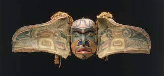

164. Transformation mask. mwakwaka’wakw. northwest coast of Canada. Late 19th century CE wood, Paint, and string.
- Form
- The mask has a birdlike exterior face; when opened, it reveals a second human face on the interior
- Function
- The masks were worn by native people of the Pacific, Northwest, centered on Vancouver Island
- They were worn over the head as part of a complete body costume
- Context
- During a ritual performance, the wearer opens and closes the transformation mask using strings
- At the moment of transformation, the performer turns his back to the audience to conceal the action and heighten the mystery
- Opening the mask reveals the face of an ancestor; there is an ancestral element to the ceremony
- Although these masks could be used at a potlatch, most often they were used in winter initiation rites ceremonies
- The ceremony is accompanied by drumming and take solace in a big house
- Masks are highly prized and often inherited.